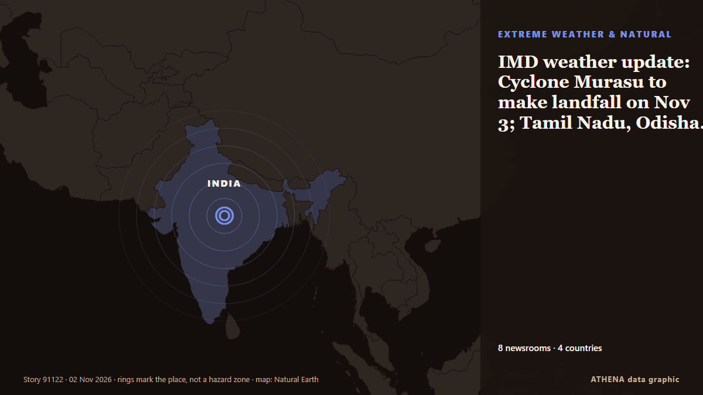

Extremwetter und Naturkatastrophen
GesponsertPräsentiert von  Cybernetics and Artificial Intelligence Lab Welcome to the Cybernetics and Artificial Intelligence Laboratory, established at the Department of Business Administration of the National
Cybernetics and Artificial Intelligence Lab Welcome to the Cybernetics and Artificial Intelligence Laboratory, established at the Department of Business Administration of the National
| 20. Okt. | 1 |
|---|---|
| 21. Okt. | 0 |
| 22. Okt. | 0 |
| 23. Okt. | 1 |
| 24. Okt. | 0 |
| 25. Okt. | 0 |
| 26. Okt. | 0 |
| 27. Okt. | 1 |
| 28. Okt. | 0 |
| 29. Okt. | 4 |
| 30. Okt. | 2 |
| 31. Okt. | 1 |
| 1. Nov. | 3 |
| 2. Nov. | 1 |
Schlagzeilen werden auf Englisch angezeigt, wie veröffentlicht.

IMD weather update: Cyclone Murasu to make landfall on Nov 3; Tamil Nadu, Odisha on high alert
Cyclone Murasu is forecast to intensify into a severe cyclonic storm and make landfall between Nellore and Narsapur in Andhra Pradesh early November 3. von Livemint
5.2-magnitude quake hits Vanuatu Islands -- GFZ
SYDNEY, Australia (AFP)—A 7.2 magnitude earthquake off Vanuatu triggered a tsunami warning on Saturday, the Pacific Tsunami Warning Centre said. von Jamaica Observer
Greece Issues Severe Weather Warning for Heavy Rain, Thunderstorms and Hail
Greece’s national weather service has issued an extraordinary bulletin warning of heavy rain and thunderstorms across much of the country on Sunday, November 1, and Monday, November 2, with a chance… von Greek Reporter
Philippines raises alert level at Mayon volcano after eruption
Residents in Albay province heard a loud boom around noon on Friday (Oct. von Gulf News
Indonesia: nine orangutans rescued from wildfires return to the forest
Nine orangutans rescued from devastating wildfires in Indonesian Borneo have returned to the forest after weeks of rehabilitation. von Euronews English
Indonesia's toxic wildfire smoke linked to 3,560 deaths in September
Over 57.8 million people faced unhealthy air in September as El Niño-driven dry conditions fuelled wildfires across Kalimantan, Sumatra and other regions. von News of Bahrain
Fire pollution killed 3,560 people in Indonesia in September
JAKARTA: Air pollution from smoke emitted by months of wildfires across Indonesia caused an estimated 3,560 deaths in the vast Southeast Asian archipelago in September alone, according to a… von New Straits Times
Bhutan glacial lake outburst triggers flood
Bengal forest minister Manoj Oraon issued a warning to residents near the Sankosh river. von Times of India
Syria flash floods kill at least 5, force hundreds of families from camps
Heavy rain and flash floods left five people dead, including four children, and forced some 375 families to flee displacement camps in Syria’s Raqqa province. von Al-Monitor